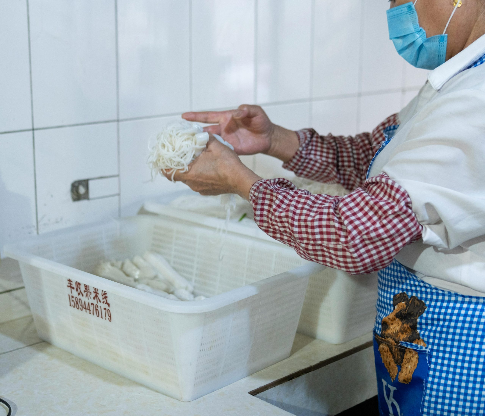

在光鮮亮麗的包養世界裡，甜心和乾爹的故事有如網路上的霓虹燈，各自閃爍吸引著好奇的眼光。包養網讓sugar baby與sugar daddy找到了連接彼此的渠道，但第一步總是充滿未知。初次踏進包養平台，看似充滿機會，卻也要懂得保護自己，注意每個細節，才有機會守住安全與尊嚴。
無論是想嘗試新體驗或想深入了解包養文化，安全都是最重要的一環。本文將用實際經驗和明確建議，帶你看懂包養、包養網、甜心、乾爹、sugar baby和sugar daddy這些詞背後真正的意思，幫助每個新手在追尋關係的同時，也不會遺失安全感。
了解包養文化與平台運作
想要真正走進包養圈子，先要理解「包養」這個概念與各角色間的互動方式。包養網只是眾多工具之一，背後有著一套清楚的運作邏輯，讓乾爹與甜心能夠找到彼此。別以為「包養」只是一場交易，其實更多的是關於界線、需求與信任的討論。
包養、甜心與乾爹：詞彙解析
在討論包養世界時，會常常聽到幾個詞：
- 包養：簡單來說，就是一方（通常是經濟能力較好的sugar daddy或乾爹）提供金錢或資源支持，另一方（多為年輕、有吸引力的sugar baby或甜心）分享陪伴或情感互動等。
- 甜心（sugar baby）：主角之一，通常年輕、重視隱私，透過包養建立更有品質的生活平衡。
- 乾爹（sugar daddy）：擁有資源的成熟人士，追求陪伴、理解與無壓力的交流。
- 包養網：一種線上平台，專為有上述需求的人服務。網路的便利性降低了雙方尋找對象的門檻，也保障基本的匿名性。
每個角色都有明確方向，但想要相處愉快，還是得靠雙方願意坦誠互動。
包養平台的常見運作方式
包養網並不是複雜的暗黑小路，它更像是約會軟體的變形版本。以下是幾個平台基本運作的流程：
- 註冊與個人資料設定
- 使用者（不分甜心或乾爹）會先註冊帳號，填寫基本資料與自我介紹。照片和個人描述多半影響初印象。
- 尋找配對
- 透過搜尋或主動推薦，使用者可以篩選自己有興趣的對象，進行初步了解與互動。
- 訊息交流
- 雙方會先在線上聊天，確認是否合得來。有些人會直接談條件，有些人會先了解彼此價值觀。
- 見面與協議
- 一旦覺得合適，便可安排實體見面。這時多數會討論細節，包括時間、地點和彼此的期望。
- 維持互動或結束關係
- 有些配對發展成長期穩定的關係，有些僅止於短暫合作。全看雙方的共識與需求。
互動模式與文化特點
包養世界帶有專屬的規則。甜心與乾爹多半一開始就說明條件，錢與情是兩條並行但獨立的軌道。信任是關鍵，過度期待或隱瞞只會讓雙方都不自在。
- 清楚溝通：在期待與條件上要坦白，別讓誤解有機會產生。
- 保護隱私：雙方都關注隱私安全，切勿輕信或分享無謂的個資。
- 相互尊重：雖然本質有交易成分，但彼此尊重才能長久維持穩定互動。
包養平台就是這樣，讓人們找到彼此，但也提醒大家，不要迷失在表象裡，真正掌握自己想要的生活步調。
個人資訊與隱私保護
在包養網註冊時，大部分人都想吸引對方，又擔心隱私外洩，這種矛盾心理最常出現。其實，只要懂得設定界線，包養、甜心、乾爹、sugar baby、sugar daddy等使用者都能自在又安心地互動。這一節將帶領大家盤點幾個不能忽略的個人資訊保護重點，讓每個人都有更安全的包養體驗。
哪些資料適合公開，哪些該保密？
註冊包養網的時候，平台通常會要求上傳個人照片、年齡、興趣或對關係的期待。有些人可能會猶豫該公開哪些資訊。建議設定帳戶時，這幾點要放在心上：
- 可公開：
- 暱稱（勿用本名）
- 模糊處理過的生活照或無臉部特徵圖片
- 粗略年齡範圍（如25-30歲）
- 一般興趣與偏好（不涉個人隱私）
- 必須保密：
- 真實姓名
- 住家、工作地點
- 手機號碼或個人常用社群帳號
- 身分證號、銀行帳戶資訊
記得，網路世界比想像中複雜，公開太多容易給有心人可乘之機。
密碼設定與安全思維
除了個人資料之外，帳號密碼往往是第一道防線。不論你是甜心還是乾爹，養成好習慣能大大降低被盜風險：
- 選擇強密碼，組合英文大小寫、數字與符號，長度至少12碼以上
- 不用和社群或常用網站相同的密碼
- 定期更換密碼，尤其發現有疑似不明登入時
- 啟用兩步驟認證，只要平台有此功能就務必開啟
這樣一來，即使有人拿到你的帳號，也無法輕易進行未經授權的操作。
善用匿名工具與隱私功能
多數包養網會提供某些匿名選項，例如匿名暱稱、隱藏興趣列表或模糊處理圖片。這些看似小細節，卻能有效降低個資暴露風險。還有一些經驗分享：
- 初期勿使用個人常用的Email，可另外申請專屬信箱
- 儘量使用平台內建的聊天功能，避免外流通訊軟體帳號
- 若需分享照片，可先用App處理模糊臉部或遮蔽背景
善用這些工具，好比幫自己的網路旅程多加一層防護罩。
提升自我保護意識
再完善的隱私功能，也敵不過「大意」。包養網的註冊過程或許簡單，但每一步都蘊藏著選擇權。只要時時提醒自己：
- 不輕易相信對方承諾
- 少公開連結真實身份的細節
- 對於有問題或可疑的對象，多一份警覺
這份警覺與保護意識，是甜心、乾爹都該堅持的底線。只要守住界線，包養平台的世界將會是一場值得探索的新旅程。
初次線上交流的安全策略
甜心、乾爹和所有對包養世界感興趣的人，第一次在包養網上互動時，難免懷有興奮和緊張。安全感和保護意識就是這個新世界的門票。無論是剛註冊的sugar baby，還是有經驗的sugar daddy，只要懂基本的線上安全策略，就能自在探索彼此。以下從「辨識詐騙」和「理性溝通」兩方面切入，帶你遠離風險、保持清醒。
辨識詐騙與欺詐行為
在包養網上尋找對象時，詐騙手法層出不窮。想守住安全底線，先學會識破騙局和警惕訊號。
常見詐騙手法：
- 假帳號與偽冒照片：盜用他人照片或空殼帳號、過於完美的形象，背後通常有陷阱。
- 以金錢為由索取資訊或費用：例如「交友驗證金」、「押金」或是各種應急理由請求匯款。
- 誘騙離開平台：鼓勵對方轉移到其他通訊軟體，避開平台稽核，方便其詐騙行為。
- 情感操控：過早表白或談及愛情，營造誇張信任感，催促你分享個資或轉帳。
警示訊號：
遇到下列情況時，請保持高警覺：
- 對方過度催促交換私人聯絡方式
- 詢問收入、住址、身份證字號或銀行資料
- 短時間內就提出金錢需求
- 資訊自相矛盾，或拒絕開視訊、見面
自我保護方法：
開啟自我防禦模式並不難，有幾個實用做法：
- 謹慎回應：看到可疑內容，寧可多想一下再回覆，不要被甜言蜜語沖昏頭。
- 不輕易分享敏感資訊：個人資料、付款信息及社群帳號一律保密，確定安全無虞才考慮分享。
- 運用平台檢舉功能：遇到可疑用戶，直接舉報或聯絡平台管理員。
- 存證對話記錄：有可疑對話留存證據，必要時方便處理或報警。
甜心與乾爹想避免掉進陷阱，先學會說「不」，勇敢拒絕超出自己底線的事。
保持理性溝通與識人之道
進入包養網，善用理性溝通能讓雙方減少誤會。尤其sugar baby常面對過度承諾、糖衣炮彈時，清醒大腦最值錢。
理性面對關係：
- 保持腳踏實地的心態，甜美承諾聽聽就好，不必馬上放進心裡。
- 遇到動機不明的乾爹或疑似過度熱情者，適度保持距離觀察一陣子。
- 已確認對象可靠前，避免見面時談及太多細節或同意交易內容。
識人技巧：
- 觀察對方溝通內容是否邏輯清楚、態度尊重，避免太快落入「一見如故」的假象。
- 以「慢熱」態度測試對方：肯真心花時間瞭解你，通常較為可靠。
- 參考對方是否願意耐心回應你的疑問，若對方只想趕快約見面或談錢，請特別小心。
溝通時的小提醒：
- 適時設下「安全碼」或分享行蹤給信任朋友，降低風險。
- 在線上溝通中，保持禮貌、不卑不亢，遇到對方設下任何「急迫感」時，別急著回應。
- 無論甜心還是乾爹，永遠記得：真誠、耐心和健康的懷疑心，才是包養關係長久的好基礎。
善用這些原則，給彼此多一層保護網。安全不是口號，是新手包養體驗能否愉快，最重要的底線。
第一次見面：現場安全小提醒
踏出第一步，線上牽起的線將在現實中相遇。甜心、乾爹、sugar baby、sugar daddy，不論身分，每個人在第一次見面時都抱著一點期待與緊張。但現場安全絕對比浪漫想像更重要。只要多一點警覺，輕鬆做好每個細節，你的包養初次體驗就能遠離風險、帶著更多安心靠近彼此。
選擇公開場合，降低風險
包養網的初次約會，不建議一開始就挑選過於隱密的地方。公開場所是守護安全的最佳起點：
- 咖啡廳、連鎖餐館或有監視器的飯店大廳都很合適。
- 避免私密空間或人煙稀少的角落。
- 如果可能，選擇自己熟悉的區域，更能掌握全場狀況。
在人來人往的地方交換第一印象，能在對話中給彼此更多安全感，也讓你隨時有退場的選擇。

Photo by Gu Ko
通知朋友護身，設立緊急聯絡
包養第一次見面，提醒身邊最信任的朋友是最簡單有效的自保方式。可以這樣做：
- 事前將見面地點、時間與對方基本資訊交給一位信得過的朋友。
- 約定一個「安全碼」，只要簡單一句話或一個符號，就能讓對方知道你是否安全。
- 安排朋友在見面快結束時打電話或傳訊息，假如感到不對勁時，有藉口及時離開。
網路時代，分享即時位置雖方便，但也要評估自己的隱私舒適度。適時利用手機的定位功能留證，自己才能更安心。
隨時觀察自身狀態，保持行動自覺
適應包養文化，學會傾聽自己的聲音。第一次見面時，請多留意這些訊號：
- 如果你覺得不舒服、壓力大或對方有超奇怪的要求，勇敢說「不」。
- 注意對方的言行舉止，是否跟線上互動一致，或是否故意讓你緊張、催促行程。
- 遇到突發情況，例如場地換到過於偏僻、要求喝酒、發現周遭有疑似共犯，要立刻結束約會離開。
把每一次見面，都當作一個「安全演練」。安全感不是偶然，而是每一步都幫自己設下界線。
安全重於浪漫，守護自己才能談信任
包養世界有甜心、有乾爹，彼此間的信任還是需要層層檢驗。首次見面時，重點不是誰主動誰被動，而是誰願意用心守護自己。設好「退場機制」，多一層準備，才有機會真正享受包養網的美好互動。
金錢往來需留心
初次踏入包養圈，金錢往來絕對是甜心和乾爹最關注的議題之一。無論你是新手sugar baby，還是資深sugar daddy，只要涉及轉帳、禮物和贈與，立刻牽動信任與安全。這個過程看似簡單，背後卻藏著不少規則與陷阱，只要一個不留神，可能掉進騙局或帶來不必要的財產風險。
包養金錢贈與的常見規則
包養網上絕大多數的互動，都是建議雙方講好規則再行動；這點是守護自己最基本的方式。最典型的金錢互動方式如下：
- 一次性的禮金：許多甜心初次見面時，會約定一筆明確的見面費。這類金額通常在見面結束後以現金或即時轉帳的方式給付。
- 週間、月度贊助：如果雙方決定維持長期關係，部分乾爹會選擇按週或按月提供「贊助費」。金額通常在雙方討論後確定，視陪伴頻率與內容而異。
- 小禮物與額外支出補貼：除了現金，有時乾爹會選擇以禮品、飯局、購物券等形式表達心意。這些支出不一定列在「贊助費」內，通常交由雙方自由協商。
雙方應該在一開始清楚談妥金額和給付方式，避免模糊地帶，也別讓「還沒見面先有金錢要求」變成不必要壓力。
安全處理匯款與贈與的建議
甜心和乾爹在包養網上互動，千萬不要在初次連結時就隨意交換金錢相關資訊。這裡有幾個實用安全守則：
- 避免提前轉帳：無論理由多充分，沒見面前不應先匯款。不能因為對方承諾回報或照顧而冒險。
- 現場贈與為佳：如果需要送出禮金或禮物，第一次見面時當面交付最安全。如此不僅減少詐騙機會，也是雙方建立信任的第一步。
- 採用匿名帳戶與第三方支付：若一定要使用匯款，建議以專門帳號或第三方支付工具進行。避免與本人的主要帳戶產生連結，多一層財務防線。
- 不提供銀行資料給陌生人：即使對方自稱很有誠意，也別提供銀行帳號、信用卡或身分證字號等資訊。寧願保持戒心，也別留下可被盜用的把柄。
這些安全流程就像是厚重防盜門，守住了自己的財產，也表達出對包養文化的尊重。
如何辨識金錢陷阱
在包養網這條線上河流裡，總有不法分子等著釣魚。這些金錢陷阱陷阱多半有三個特色：
- 要求「驗證金」或「保證金」：詐騙最愛的說法就是「證明誠意」或「先交押金」，這類要求都應該拒絕。
- 讓你主動轉帳小額匯款：有些人會假裝測試你的信任度，先要小額匯款，接著提出更大金額。只要你答應第一次，他可能得寸進尺。
- 以禮物名義要帳號或個資：有的自稱要送禮，卻需你的地址、電話甚至金融資訊。若對方一再要求這些敏感資料，請馬上中止聯繫。
包養從不是單純金錢買賣，而是信任上的對價。甜心、乾爹不應讓彼此陷入「誰付得起代價」的拉鋸戰，而是以安全、防詐為第一原則。
遇到金錢糾紛時的正確處理
如果真的不幸遇到金錢糾紛，別急躁也別驚慌。正確應對方式如下：
- 先存證所有對話、轉帳記錄與帳戶資訊，避免被對方倒打一耙
- 立刻暫停金錢往來，檢查是否涉及詐騙，必要時諮詢專業法律意見
- 運用包養網提供的舉報功能，讓平台介入調查，保護自身權益
- 遇到嚴重情況請報警，讓警方介入處理，減少損失和後續困擾
只要堅持這些原則，無論你是甜心還是乾爹，包養路上都能安心安穩向前走。安全金錢互動，是包養文化穩定、健康運作不可缺少的基石。
結語
每個剛踏入包養網的甜心或乾爹，都值得一份平靜與安全的開始。理解平台的運作，細心保護個人資料，再加上一份理性和堅持底線，就能避開風險與騙局。
勇敢做自己，時時觀察細節，若感到不對勁，就相信直覺，勇於喊停。安全感來自每個小動作的積累，也來自對信任的珍惜與守護。
包養網、甜心、乾爹、sugar baby、sugar daddy，這些角色交織出不同故事。只要記得安全第一，包養世界依然能溫柔以待，每段關係也能留下自在與從容。
謝謝每一位願意細讀的朋友，邀請你一起守護界線，分享經驗，讓包養文化越來越透明且健康。